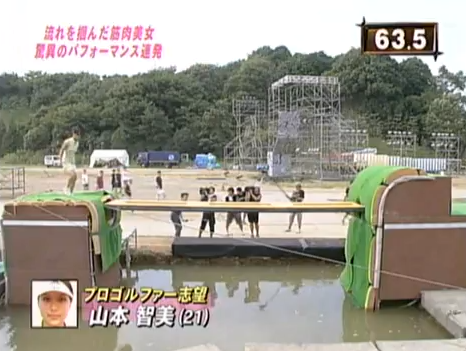
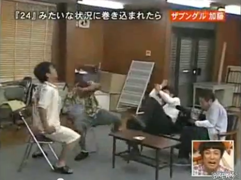

Impersonations
It's with this first video we begin our tour of the Japanese games. The rules for this? Win.
Yes but how ? Four persons sitting around a table, a discussion as others and who laughs first gets one point and a pledge : a
dart in the hindquarters. The game ends after a set number of points. The one with the highest number of points lost. Who will be
the winner ? ... READ MORE ...
Funny Japanese English Lesson VOSTEN
This video talks about a game which take place in a highschool with the pupils who are replaced by the
players. The aim ? Watch a video on the board without smile or laugh a little. If you do, you risk to have a punishment, be hit with a
kendo stick (soft stick). Note that I didn't say that you, you risked something so have fun! ... READ MORE ...
Silent Library
Here is a new game with rules always so absurd as we love them. The players are seated around a table in a
library and have to draw a card. The player who draw that with the head of sudden dead man the challenge without possible redittion. A
small panel is on the table and on every sheet, a new more painful and delirious challenge some that the others. And of course, the whole
in an absolute silence ! ... READ MORE ...
Kunoichi

Similar to a TV game currently released in France under the name of "Total Wipeout", Kunoichi is a program
that provides participants the challenge of achieving a continuous sequence of events dexterity and skill in a given time to press the
buzzer at the end symbolizing the end of the course and successful participant. ... READ MORE ...
Terrifying Sniper Prank on Japanese TV

Have you ever seen a real scary face ? I think yes but not like that. Terrifying Sniper Prank is a TV Show were
victims are attacked by a sniper. Attacked ? Not really. Victims are not ones, they’re just actors. Unfortunately, one of the people is not one.
He had the fear of his life ! ... READ MORE ...
Marshmallow eating
In the category of smart Japanese games, it does not belong. The principle of the game ? An elastic attached to
a wall, dangling marshmallows increasingly far and candidates should put the elastic around their head and somehow catch the famous candy.
Warning, sensitive refrain faces ! ... READ MORE ...